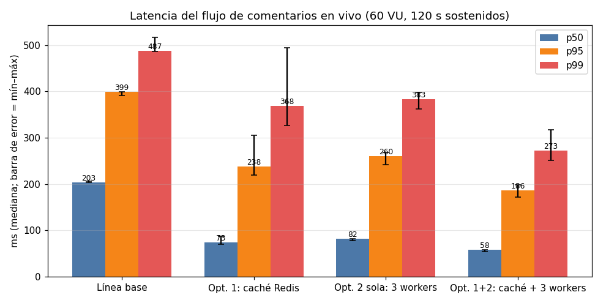
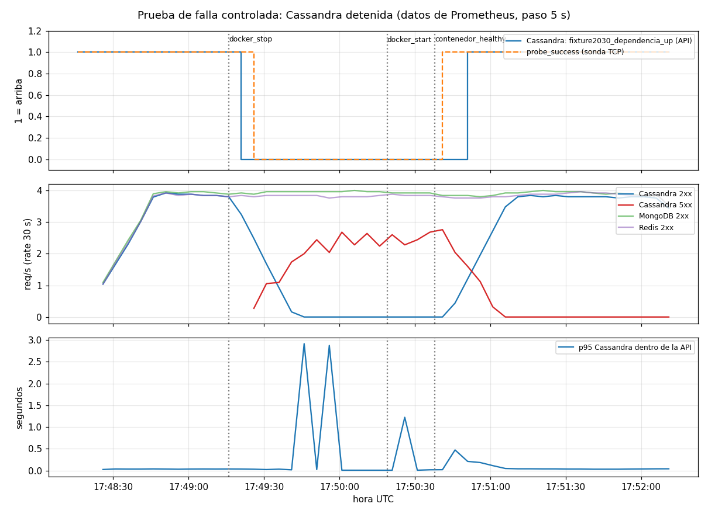

Grupo 15 · Bases de Datos II · Defensa final ante la FIFA
Seis modelos NoSQL integrados por una API, medidos bajo carga y observados con Prometheus y Grafana
| Dato del Fixture | Cómo se accede | Qué necesita |
|---|---|---|
| Equipos y jugadores | ficha por código, plantel paginado | documento flexible con índices |
| Quién jugó contra quién | recorridos de 2-3 saltos | relaciones como ciudadanos de primera |
| Comentarios de hinchas | miles de escrituras por partido, feed reciente | escritura distribuida, lectura por partición |
| Sesiones | lectura por clave en cada request; vencen | memoria + TTL |
| Estadísticas por segundo | ventanas de tiempo, agregados por minuto | series temporales con retención |
| Partido y sus eventos | entidad completa + transiciones de estado válidas | objetos con reglas + SQL, consistencia fuerte |
Una sola base resolvería bien uno o dos de estos accesos. Decisión: una base por patrón, y cada endpoint usa una sola base.
| Base | Modelo | Estructura implementada | Endpoint |
|---|---|---|---|
| MongoDB | documental | equipos, jugadores con $jsonSchema; índice {equipoId, posicion, dorsal}; paginación por clave | GET /equipos, /jugadores |
| Neo4j | grafo | (Jugador)-[:PARTICIPA_EN]->(Partido)<-[:DISPUTA]-(Equipo) | GET /jugadores/{c}/partidos |
| Cassandra | columnar | partición (partido, bucket_5m, shard), 8 shards; tabla por usuario; BATCH LOGGED | GET/POST /partidos/{c}/comentarios |
| Redis | clave-valor | sesión HASH + TTL 30 min, AOF, 256 MB noeviction; caché del feed TTL 1 s | /sesiones/{id} |
| InfluxDB 3 | series temporales | estadisticas_equipo, retención 14 días, agregación por minuto | /partidos/{c}/estadisticas |
| IRIS | multimodelo | Fixture.Partido con Eventos (padre-hijo); transiciones validadas | /partidos/{c}/detalle, /estado |
Detalle por base (acceso, escala, consistencia, falla, costo, evidencia): hito-13-monitoreo/docs/decisiones_de_arquitectura.md
LOCAL_QUORUMMedido: con Cassandra detenida, MongoDB y Redis siguieron respondiendo 100 % OK; la API se recuperó sola al volver la base.
Fuente: hito-12-carga-optimizacion/docs/linea_base.md
| Mediana de 3 corridas | Línea base | Caché Redis 1 s | 3 workers | Caché + 3 workers |
|---|---|---|---|---|
| Throughput (req/s) | 163,4 | 248,2 | 237,9 | 272,8 (+67 %) |
| p50 / p95 / p99 (ms) | 203 / 399 / 487 | 73 / 238 / 368 | 82 / 260 / 383 | 58 / 186 / 273 |
| CPU Cassandra | 102 % | 72 % | 147 % | 69 % |
| Memoria API | 174 MB | 137 MB | 430 MB | 397 MB |
| Integridad | OK | OK | OK | 1 escritura fantasma |
Trade-offs: el feed puede llegar hasta 1 s desactualizado; más memoria y conexiones. Hallazgo: un POST con timeout del cliente se escribió igual (arranque en frío de un proceso) → falta idempotencia del POST.

/metrics)BaseNoDisponible (30 s), SondaTCPFallando, ErroresServidorAltos (>2 %), LatenciaComentariosAlta (p95 > 300 ms), TargetDeMonitoreoCaidoLímite honesto: Cassandra, Neo4j, InfluxDB e IRIS se ven solo por disponibilidad y por su efecto en la API (sin métricas internas en el laboratorio).

| Antes | Con corte rápido | |
|---|---|---|
| Latencia de los 503 (p50 / p95) | 4.081 / 7.952 ms | 3 / 11 ms |
| La API reporta la caída | 30 s | 5 s |
| Recuperación tras base sana | 7 s | 13 s (costo del corte) |